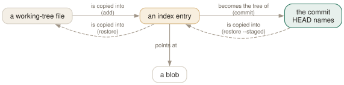

Day 02
The three states
Working tree, index, HEAD — and the commands that move a change from one to the next.
By the end of today you can
- say, for any file, whether its working-tree, index and HEAD versions agree — and read that off
git status -s - build a commit out of part of your changes with
git add -p, and check it withgit diff --stagedbefore it exists - undo a change at exactly the level you meant: unstage it, or throw it away
Every file has three versions
At any moment, a tracked file exists in three places: the working tree (the file on disk you edit), the index (the snapshot being assembled for the next commit), and HEAD (the snapshot of the last commit). Every everyday command copies a version from one place to another, and git status is a report of where the three disagree.
The manual page's DISCUSSION section describes the index as a list of all paths and, for each path, a blob and some attributes. Read that carefully: it is not a list of what changed. After a checkout or a commit the index holds the complete tree of HEAD, entry for entry. Editing a file makes the working tree differ from it; git add makes the index catch up; git commit freezes the index into a tree and a commit, and now HEAD has caught up too.
Connect it to Day 1. git add is the moment the blob is written. Stage a file and look:
$ echo four >> notes.txt
$ git add notes.txt
$ git ls-files -s notes.txt
100644 f384549cbeb481e437091320de6d1f2e15e11b4a 0 notes.txt
$ git cat-file -t f384549
blob
The object exists before any commit does. git commit only has to write trees and the commit itself, which is why it is fast however large the change.

git status is the report of where the three disagree. The index is the middle box, and it is a whole snapshot, not a list of changes: after a commit, index and HEAD are identical and git diff --staged is empty.Reading git status in two columns
The long form of git status is readable but wordy. The short form packs the three-way comparison into two characters per path, and it is the one worth learning:
$ git status -s
M app.py
MM notes.txt
?? scratch.log
- left column
- HEAD versus index — what is staged.
Mmodified,Aadded,Ddeleted,Rrenamed. - right column
- Index versus working tree — what is not staged yet. Same letters.
M- Changed on disk, nothing staged.
M- Staged, and the file on disk matches what is staged.
MM- Staged, then edited again. The commit will contain the staged version only.
??- Untracked: git has no index entry for it at all.
The two diffs are the same two comparisons, spelled out. git diff is the right column — index versus working tree, the changes you have not staged. git diff --staged is the left column — HEAD versus index, the commit you are about to make. Plain git diff is empty for a fully staged file, which surprises everyone once.
Composing a commit
git add <path> stages a whole file. git add -p (patch mode) is the one that makes the index worth having: it shows each hunk and asks.
$ git add -p big.txt
@@ -1,5 +1,5 @@
line1
-line2
+LINE2
line3
(1/2) Stage this hunk [y,n,q,a,d,k,K,j,J,g,/,e,p,P,?]? n
@@ -15,6 +15,6 @@ line14
-line18
+LINE18
(2/2) Stage this hunk [y,n,q,a,d,K,J,g,/,e,p,P,?]? y
$ git status -s
MM big.txt
Four answers carry most of the use: y stage it, n skip it, s split it into smaller hunks (offered only when the hunk has unchanged lines between its changes — which is why it is missing from the prompt above), q stop. ? explains the rest.
Then commit. git commit opens your editor; with commit.verbose set (today's config), the staged diff appears below the message, under a scissors line git strips out. git commit -a is the shortcut that stages every modified tracked file first — convenient, and it never picks up a new file.
Undoing at the level you meant
The reverse direction is one command with one switch. git restore copies a version one step back towards the working tree:
git restore --staged f- HEAD's version into the index. Unstages; your file on disk is untouched.
git restore f- The index version onto the file on disk. Discards unstaged edits.
git rm --cached f- Delete the index entry. The file stays on disk and becomes untracked.
Your first config lines
Git refuses to commit without an identity, and the identity is written into every commit — so it belongs in ~/.gitconfig, not typed per repository. Two more lines are worth having from the start. git init in 2.52 still names the first branch master, and says so at length:
$ git init probe
hint: Using 'master' as the name for the initial branch. This default branch name
hint: will change to "main" in Git 3.0. To configure the initial branch name
hint: to use in all of your new repositories, which will suppress this warning,
hint: call:
hint:
hint: git config --global init.defaultBranch <name>
Setting init.defaultBranch makes new repositories match what most hosts already default to, and silences the hint. commit.verbose puts the diff where you write the message. The blocks below go into your file with real values; Day 12 explains where git looks for it and in what order.
Today's habit
Replace git commit -a with git add -p followed by git commit for a week. It is slower for three days and then it is how you think: every commit is something you have read.
Tomorrow: what a branch actually is, and why creating one costs forty-one bytes.
New vocabulary
Commands
| Command | Does |
|---|---|
git status -s | Show each changed path with two columns: index vs HEAD, then working tree vs index. |
git add <path> | Copy the file's current contents into the index. Writes the blob immediately. |
git add -p | Walk through each hunk and choose which ones go into the index. |
git diff | Show what differs between the index and the working tree — what add would stage. |
git diff --staged | Show what differs between HEAD and the index — what commit would record. |
git restore <path> | Overwrite the working-tree file with the index version. Discards unstaged edits. |
git restore --staged <path> | Reset the index entry to HEAD's version. The working tree is untouched. |
git commit [-a] | Turn the index into a tree, wrap it in a commit, move the branch to it. -a first stages every modified tracked file (never untracked ones). |
git rm --cached <path> | Remove a path from the index only; the file stays on disk, now untracked. |
Options
| Option | Does |
|---|---|
user.name / user.email | Set the identity written into every commit's author and committer lines. |
init.defaultBranch | Name the first branch of every new repository. |
commit.verbose | Show the staged diff below the message in the commit editor. |
Today's configappend to ~/.gitconfig
Who you are. Git refuses to commit without this, and it is copied into every commit you make, so set it once here rather than per repository.
[user]
name = Your Name
email = you@example.com
git 2.52 still names the first branch 'master' and prints a hint saying the default becomes 'main' in Git 3.0. Settle it now; the hint goes away. The diff below the commit message means you write the message while looking at what you are actually committing.
[init]
defaultBranch = main
[commit]
verbose = true
git reads its config afresh on every command, so there is nothing to reload. Check what is in force, and which file it came from, with git config list --show-origin.
Drillsdo these in a real terminal, today
Self-check
Answer out loud first, then unfold.
You edit notes.txt, run git add notes.txt, add one more line, and commit. The last line is not in the commit. Why?
git add copied the file's contents into the index at the moment you ran it — it wrote a blob and pointed the index entry at it. git commit builds the snapshot from the index, not from the disk. Your later edit exists only in the working tree, and git status -s still shows the file as M after the commit.
The index is not a list of file names to commit. It is a full set of file contents, one step ahead of HEAD.
A colleague runs git commit -a -m 'Add report' and the new report.py is not in the commit. What happened?
-a stages every tracked file that has been modified or deleted. A file git has never seen is not tracked, so -a leaves it alone. The first git add report.py is what makes it tracked; after that, -a picks up its changes.
You meant to unstage a file and ran git restore notes.txt instead of git restore --staged notes.txt. What did you lose?
Every edit in the working tree that was not in the index. Without --staged, restore copies the index version over the working-tree file; nothing stored those unstaged bytes, so git cannot give them back. The staged version survives, because it is a blob in the object store.
The rule: restore moves a version one step towards the working tree. --staged targets the index; without it, the target is your file.
You committed secrets.env, then ran git rm --cached secrets.env and committed again. Is the secret gone from the repository?
No. The new commit's tree no longer lists the file, but the previous commit still names its tree, which still names the blob — exactly the Day 1 gotcha. git rm --cached stops tracking a file from now on. If the secret was ever pushed, rotate it; removing it from history means rewriting history, and every clone still has it.
Cheat sheet
git status -s # left col: staged right col: unstaged
git diff # index -> working tree (not yet staged)
git diff --staged # HEAD -> index (what commit records)
git add FILE # working tree -> index (writes the blob now)
git add -p # choose hunks: y n s q ?
git commit # index -> tree -> commit; branch moves
git restore --staged FILE # HEAD -> index (unstage; safe)
git restore FILE # index -> working tree (discards edits!)
git rm --cached FILE # stop tracking, keep the file
Everything through Day 02
Commands
| Command | Does |
|---|---|
git init -b main | Create an empty repository whose first branch is main. |
git hash-object <file> | Print the object name the file's contents would get. Writes nothing without -w. |
git cat-file -t <object> | Print an object's type: blob, tree, commit or tag. |
git cat-file -p <object> | Pretty-print an object's contents. The one command that shows what git really stores. |
git cat-file -s <object> | Print an object's size in bytes. |
git ls-tree -r <tree-ish> | List every blob in a tree, recursively, with mode and hash. |
git rev-parse HEAD | Turn a name into the full hash it currently means. |
git count-objects -v | Count loose and packed objects and the disk they use. |
git status -s | Show each changed path with two columns: index vs HEAD, then working tree vs index. |
git add <path> | Copy the file's current contents into the index. Writes the blob immediately. |
git add -p | Walk through each hunk and choose which ones go into the index. |
git diff | Show what differs between the index and the working tree — what add would stage. |
git diff --staged | Show what differs between HEAD and the index — what commit would record. |
git restore <path> | Overwrite the working-tree file with the index version. Discards unstaged edits. |
git restore --staged <path> | Reset the index entry to HEAD's version. The working tree is untouched. |
git commit [-a] | Turn the index into a tree, wrap it in a commit, move the branch to it. -a first stages every modified tracked file (never untracked ones). |
git rm --cached <path> | Remove a path from the index only; the file stays on disk, now untracked. |
Options
| Option | Does |
|---|---|
user.name / user.email | Set the identity written into every commit's author and committer lines. |
init.defaultBranch | Name the first branch of every new repository. |
commit.verbose | Show the staged diff below the message in the commit editor. |